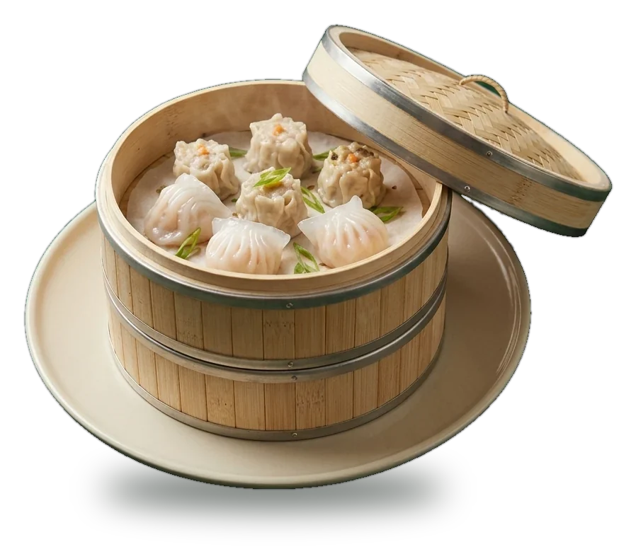
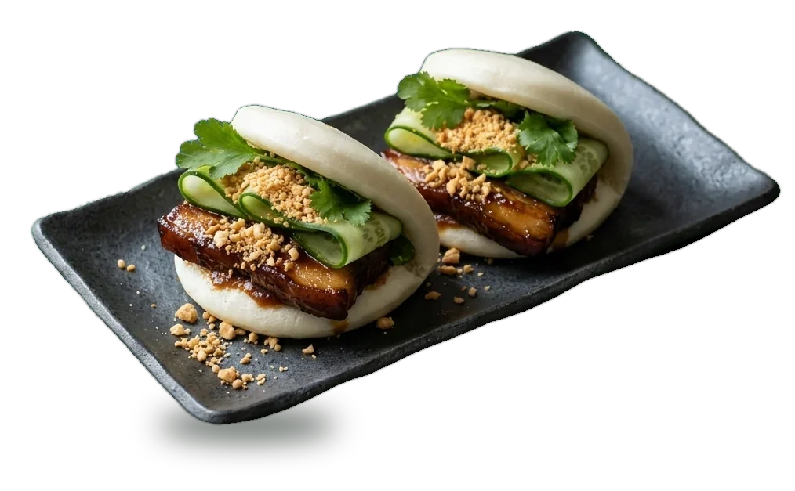
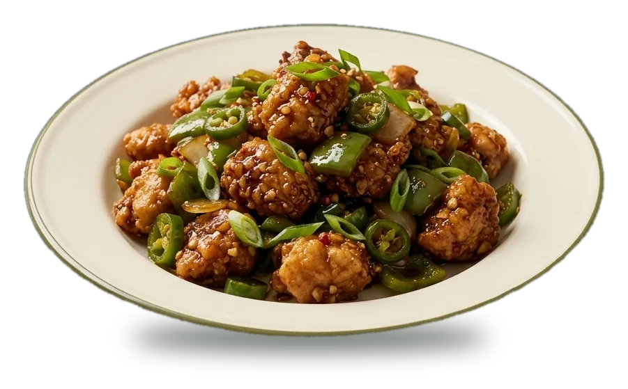
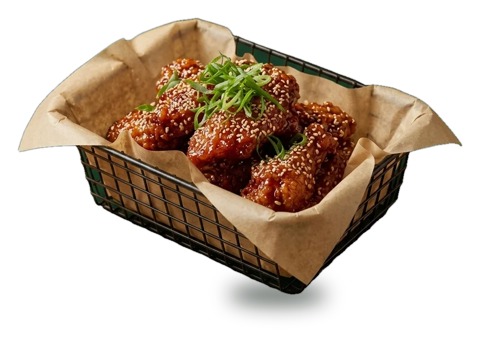
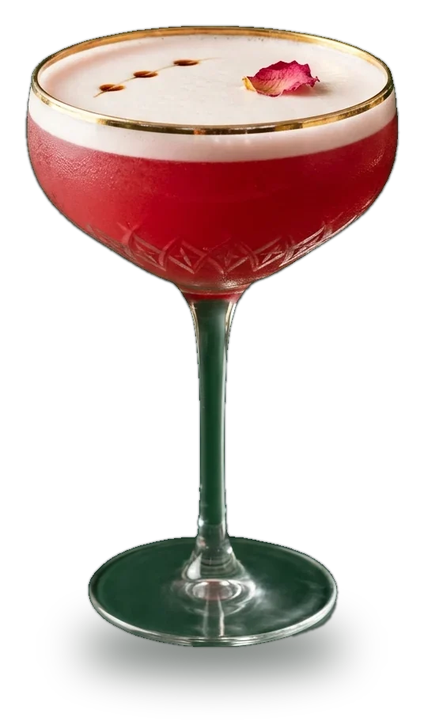
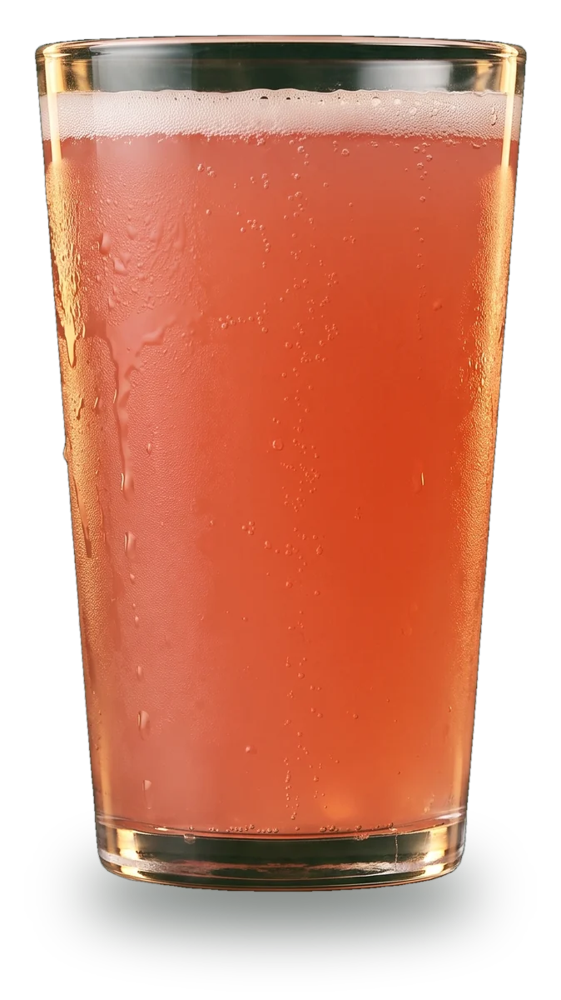
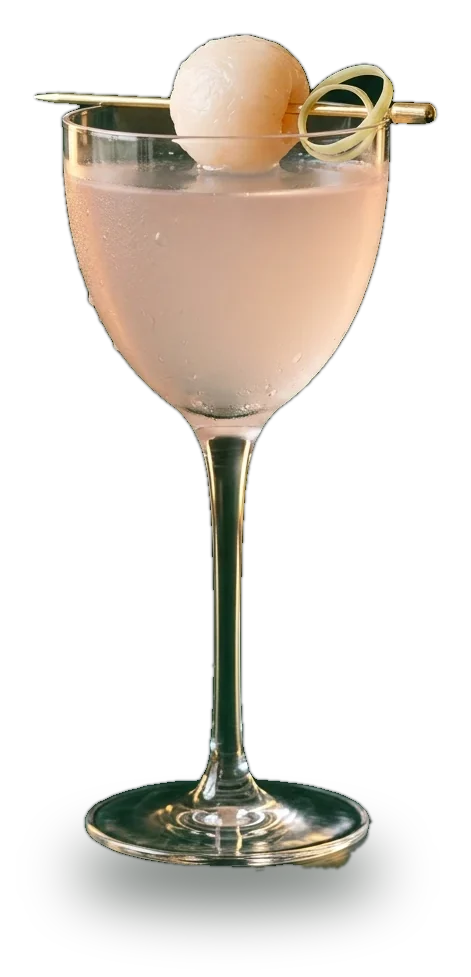
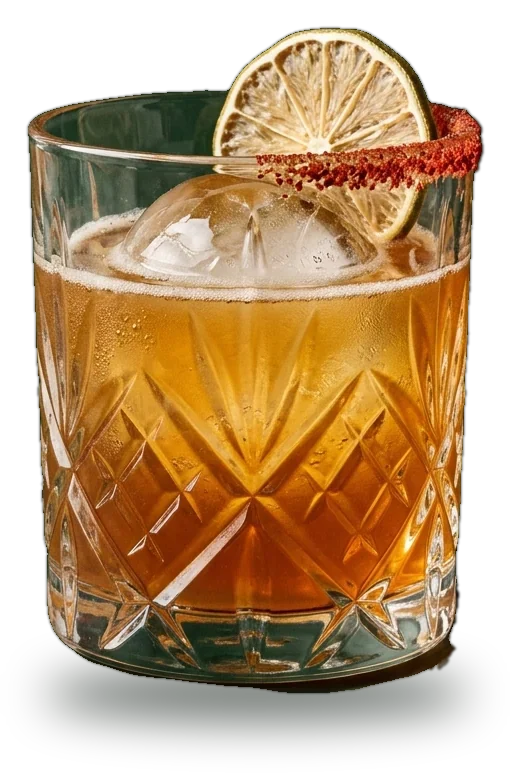

Steamer for two


Konso, Cavelossim, South Goa. Opening soon.
Noon to 11 pm
Closed Mondays
Konso Fever




Kokum Feni Sour




Happy hour, noon to six.
A short walk from the beach. Opening soon.